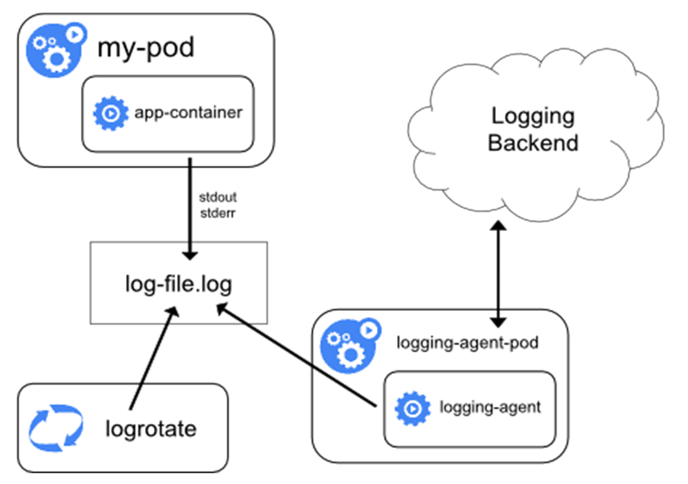
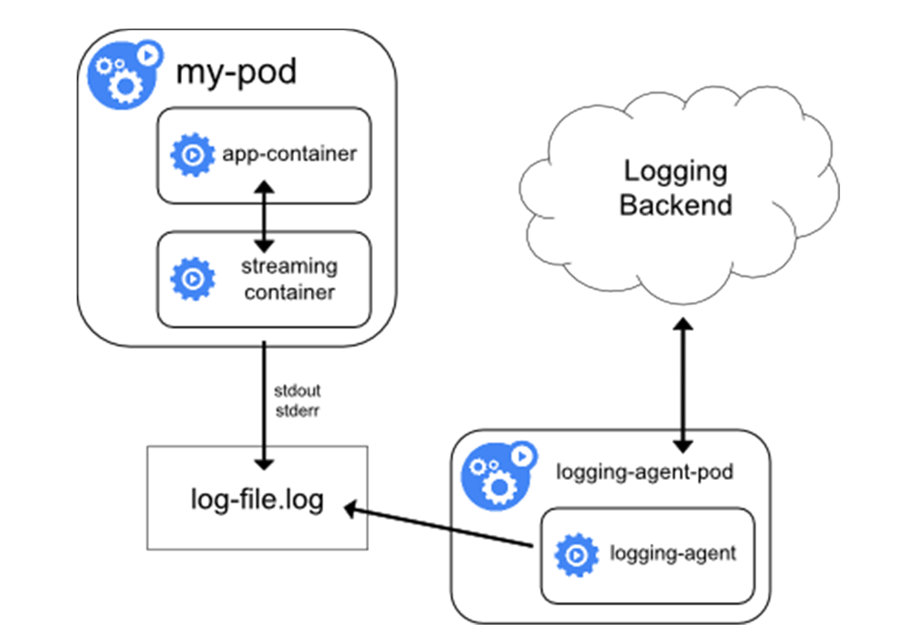
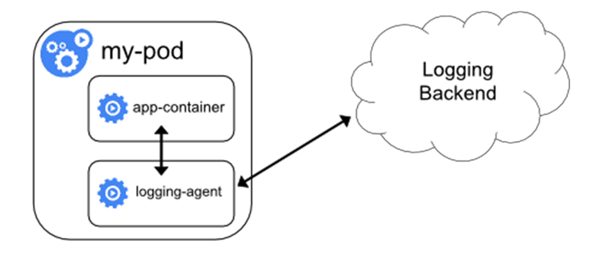
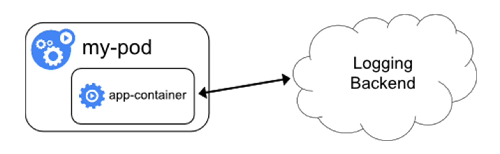

- 00 开篇词 打通“容器技术”的任督二脉.md
- 01 预习篇 · 小鲸鱼大事记（一）：初出茅庐.md
- 02 预习篇 · 小鲸鱼大事记（二）：崭露头角.md
- 03 预习篇 · 小鲸鱼大事记（三）：群雄并起.md
- 04 预习篇 · 小鲸鱼大事记（四）：尘埃落定.md
- 05 白话容器基础（一）：从进程说开去.md
- 06 白话容器基础（二）：隔离与限制.md
- 07 白话容器基础（三）：深入理解容器镜像.md
- 08 白话容器基础（四）：重新认识Docker容器.md
- 09 从容器到容器云：谈谈Kubernetes的本质.md
- 10 Kubernetes一键部署利器：kubeadm.md
- 11 从0到1：搭建一个完整的Kubernetes集群.md
- 12 牛刀小试：我的第一个容器化应用.md
- 13 为什么我们需要Pod？.md
- 14 深入解析Pod对象（一）：基本概念.md
- 15 深入解析Pod对象（二）：使用进阶.md
- 16 编排其实很简单：谈谈“控制器”模型.md
- 17 经典PaaS的记忆：作业副本与水平扩展.md
- 18 深入理解StatefulSet（一）：拓扑状态.md
- 19 深入理解StatefulSet（二）：存储状态.md
- 20 深入理解StatefulSet（三）：有状态应用实践.md
- 21 容器化守护进程的意义：DaemonSet.md
- 22 撬动离线业务：Job与CronJob.md
- 23 声明式API与Kubernetes编程范式.md
- 24 深入解析声明式API（一）：API对象的奥秘.md
- 25 深入解析声明式API（二）：编写自定义控制器.md
- 26 基于角色的权限控制：RBAC.md
- 27 聪明的微创新：Operator工作原理解读.md
- 28 PV、PVC、StorageClass，这些到底在说啥？.md
- 29 PV、PVC体系是不是多此一举？从本地持久化卷谈起.md
- 30 编写自己的存储插件：FlexVolume与CSI.md
- 31 容器存储实践：CSI插件编写指南.md
- 32 浅谈容器网络.md
- 33 深入解析容器跨主机网络.md
- 34 Kubernetes网络模型与CNI网络插件.md
- 35 解读Kubernetes三层网络方案.md
- 36 为什么说Kubernetes只有soft multi-tenancy？.md
- 37 找到容器不容易：Service、DNS与服务发现.md
- 38 从外界连通Service与Service调试“三板斧”.md
- 39 谈谈Service与Ingress.md
- 40 Kubernetes的资源模型与资源管理.md
- 41 十字路口上的Kubernetes默认调度器.md
- 42 Kubernetes默认调度器调度策略解析.md
- 43 Kubernetes默认调度器的优先级与抢占机制.md
- 44 Kubernetes GPU管理与Device Plugin机制.md
- 45 幕后英雄：SIG-Node与CRI.md
- 46 解读 CRI 与 容器运行时.md
- 47 绝不仅仅是安全：Kata Containers 与 gVisor.md
- 48 Prometheus、Metrics Server与Kubernetes监控体系.md
- 49 Custom Metrics_ 让Auto Scaling不再“食之无味”.md
- 50 让日志无处可逃：容器日志收集与管理.md
- 51 谈谈Kubernetes开源社区和未来走向.md
- 52 答疑：在问题中解决问题，在思考中产生思考.md
- 特别放送 2019 年，容器技术生态会发生些什么？.md
- 特别放送 基于 Kubernetes 的云原生应用管理，到底应该怎么做？.md
- 结束语 Kubernetes：赢开发者赢天下.md
50 让日志无处可逃：容器日志收集与管理
你好，我是张磊。今天我和你分享的主题是：让日志无处可逃之容器日志收集与管理。
在前面的文章中，我为你详细讲解了 Kubernetes 的核心监控体系和自定义监控体系的设计与实现思路。而在本篇文章里，我就来为你详细介绍一下Kubernetes 里关于容器日志的处理方式。
首先需要明确的是，Kubernetes 里面对容器日志的处理方式，都叫作cluster-level-logging，即：这个日志处理系统，与容器、Pod以及Node的生命周期都是完全无关的。这种设计当然是为了保证，无论是容器挂了、Pod 被删除，甚至节点宕机的时候，应用的日志依然可以被正常获取到。
而对于一个容器来说，当应用把日志输出到 stdout 和 stderr 之后，容器项目在默认情况下就会把这些日志输出到宿主机上的一个 JSON 文件里。这样，你通过 kubectl logs 命令就可以看到这些容器的日志了。
上述机制，就是我们今天要讲解的容器日志收集的基础假设。而如果你的应用是把文件输出到其他地方，比如直接输出到了容器里的某个文件里，或者输出到了远程存储里，那就属于特殊情况了。当然，我在文章里也会对这些特殊情况的处理方法进行讲述。
而 Kubernetes 本身，实际上是不会为你做容器日志收集工作的，所以为了实现上述cluster-level-logging，你需要在部署集群的时候，提前对具体的日志方案进行规划。而 Kubernetes 项目本身，主要为你推荐了三种日志方案。
第一种，在 Node 上部署 logging agent，将日志文件转发到后端存储里保存起来。这个方案的架构图如下所示。

不难看到，这里的核心就在于 logging agent ，它一般都会以 DaemonSet 的方式运行在节点上，然后将宿主机上的容器日志目录挂载进去，最后由 logging-agent 把日志转发出去。
举个例子，我们可以通过 Fluentd 项目作为宿主机上的 logging-agent，然后把日志转发到远端的 ElasticSearch 里保存起来供将来进行检索。具体的操作过程，你可以通过阅读这篇文档来了解。另外，在很多 Kubernetes 的部署里，会自动为你启用 logrotate，在日志文件超过10MB 的时候自动对日志文件进行 rotate 操作。
可以看到，在 Node 上部署 logging agent最大的优点，在于一个节点只需要部署一个 agent，并且不会对应用和 Pod 有任何侵入性。所以，这个方案，在社区里是最常用的一种。
但是也不难看到，这种方案的不足之处就在于，它要求应用输出的日志，都必须是直接输出到容器的 stdout 和 stderr 里。
所以，Kubernetes 容器日志方案的第二种，就是对这种特殊情况的一个处理，即：当容器的日志只能输出到某些文件里的时候，我们可以通过一个 sidecar 容器把这些日志文件重新输出到 sidecar 的 stdout 和 stderr 上，这样就能够继续使用第一种方案了。这个方案的具体工作原理，如下所示。

比如，现在我的应用 Pod 只有一个容器，它会把日志输出到容器里的/var/log/1.log 和2.log 这两个文件里。这个 Pod 的 YAML 文件如下所示：
apiVersion: v1
kind: Pod
metadata:
name: counter
spec:
containers:
- name: count
image: busybox
args:
- /bin/sh
- -c
- >
i=0;
while true;
do
echo "$i: $(date)" >> /var/log/1.log;
echo "$(date) INFO $i" >> /var/log/2.log;
i=$((i+1));
sleep 1;
done
volumeMounts:
- name: varlog
mountPath: /var/log
volumes:
- name: varlog
emptyDir: {}
在这种情况下，你用 kubectl logs 命令是看不到应用的任何日志的。而且我们前面讲解的、最常用的方案一，也是没办法使用的。
那么这个时候，我们就可以为这个 Pod 添加两个 sidecar容器，分别将上述两个日志文件里的内容重新以 stdout 和 stderr 的方式输出出来，这个 YAML 文件的写法如下所示：
apiVersion: v1
kind: Pod
metadata:
name: counter
spec:
containers:
- name: count
image: busybox
args:
- /bin/sh
- -c
- >
i=0;
while true;
do
echo "$i: $(date)" >> /var/log/1.log;
echo "$(date) INFO $i" >> /var/log/2.log;
i=$((i+1));
sleep 1;
done
volumeMounts:
- name: varlog
mountPath: /var/log
- name: count-log-1
image: busybox
args: [/bin/sh, -c, 'tail -n+1 -f /var/log/1.log']
volumeMounts:
- name: varlog
mountPath: /var/log
- name: count-log-2
image: busybox
args: [/bin/sh, -c, 'tail -n+1 -f /var/log/2.log']
volumeMounts:
- name: varlog
mountPath: /var/log
volumes:
- name: varlog
emptyDir: {}
这时候，你就可以通过 kubectl logs 命令查看这两个 sidecar 容器的日志，间接看到应用的日志内容了，如下所示：
$ kubectl logs counter count-log-1
0: Mon Jan 1 00:00:00 UTC 2001
1: Mon Jan 1 00:00:01 UTC 2001
2: Mon Jan 1 00:00:02 UTC 2001
...
$ kubectl logs counter count-log-2
Mon Jan 1 00:00:00 UTC 2001 INFO 0
Mon Jan 1 00:00:01 UTC 2001 INFO 1
Mon Jan 1 00:00:02 UTC 2001 INFO 2
...
由于 sidecar 跟主容器之间是共享 Volume 的，所以这里的 sidecar 方案的额外性能损耗并不高，也就是多占用一点 CPU 和内存罢了。
但需要注意的是，这时候，宿主机上实际上会存在两份相同的日志文件：一份是应用自己写入的；另一份则是 sidecar 的 stdout 和 stderr 对应的 JSON 文件。这对磁盘是很大的浪费。所以说，除非万不得已或者应用容器完全不可能被修改，否则我还是建议你直接使用方案一，或者直接使用下面的第三种方案。
第三种方案，就是通过一个 sidecar 容器，直接把应用的日志文件发送到远程存储里面去。也就是相当于把方案一里的 logging agent，放在了应用 Pod 里。这种方案的架构如下所示：

在这种方案里，你的应用还可以直接把日志输出到固定的文件里而不是 stdout，你的 logging-agent 还可以使用 fluentd，后端存储还可以是 ElasticSearch。只不过， fluentd 的输入源，变成了应用的日志文件。一般来说，我们会把 fluentd 的输入源配置保存在一个 ConfigMap 里，如下所示：
apiVersion: v1
kind: ConfigMap
metadata:
name: fluentd-config
data:
fluentd.conf: |
<source>
type tail
format none
path /var/log/1.log
pos_file /var/log/1.log.pos
tag count.format1
</source>
<source>
type tail
format none
path /var/log/2.log
pos_file /var/log/2.log.pos
tag count.format2
</source>
<match **>
type google_cloud
</match>
然后，我们在应用 Pod 的定义里，就可以声明一个Fluentd容器作为 sidecar，专门负责将应用生成的1.log 和2.log转发到 ElasticSearch 当中。这个配置，如下所示：
apiVersion: v1
kind: Pod
metadata:
name: counter
spec:
containers:
- name: count
image: busybox
args:
- /bin/sh
- -c
- >
i=0;
while true;
do
echo "$i: $(date)" >> /var/log/1.log;
echo "$(date) INFO $i" >> /var/log/2.log;
i=$((i+1));
sleep 1;
done
volumeMounts:
- name: varlog
mountPath: /var/log
- name: count-agent
image: k8s.gcr.io/fluentd-gcp:1.30
env:
- name: FLUENTD_ARGS
value: -c /etc/fluentd-config/fluentd.conf
volumeMounts:
- name: varlog
mountPath: /var/log
- name: config-volume
mountPath: /etc/fluentd-config
volumes:
- name: varlog
emptyDir: {}
- name: config-volume
configMap:
name: fluentd-config
可以看到，这个 Fluentd 容器使用的输入源，就是通过引用我们前面编写的 ConfigMap来指定的。这里我用到了 Projected Volume 来把 ConfigMap 挂载到 Pod 里。如果你对这个用法不熟悉的话，可以再回顾下第15篇文章《 深入解析Pod对象（二）：使用进阶》中的相关内容。
需要注意的是，这种方案虽然部署简单，并且对宿主机非常友好，但是这个 sidecar 容器很可能会消耗较多的资源，甚至拖垮应用容器。并且，由于日志还是没有输出到 stdout上，所以你通过 kubectl logs 是看不到任何日志输出的。
以上，就是 Kubernetes 项目对容器应用日志进行管理最常用的三种手段了。
总结
在本篇文章中，我为你详细讲解了Kubernetes 项目对容器应用日志的收集方式。综合对比以上三种方案，我比较建议你将应用日志输出到 stdout 和 stderr，然后通过在宿主机上部署 logging-agent 的方式来集中处理日志。
这种方案不仅管理简单，kubectl logs 也可以用，而且可靠性高，并且宿主机本身，很可能就自带了 rsyslogd 等非常成熟的日志收集组件来供你使用。
除此之外，还有一种方式就是在编写应用的时候，就直接指定好日志的存储后端，如下所示：

在这种方案下，Kubernetes 就完全不必操心容器日志的收集了，这对于本身已经有完善的日志处理系统的公司来说，是一个非常好的选择。
最后需要指出的是，无论是哪种方案，你都必须要及时将这些日志文件从宿主机上清理掉，或者给日志目录专门挂载一些容量巨大的远程盘。否则，一旦主磁盘分区被打满，整个系统就可能会陷入崩溃状态，这是非常麻烦的。
思考题
请问，当日志量很大的时候，直接将日志输出到容器 stdout 和 stderr上，有没有什么隐患呢？有没有解决办法呢？
你还有哪些容器收集的方案，是否可以分享一下？
感谢你的收听，欢迎你给我留言，也欢迎分享给更多的朋友一起阅读。

© 2019 - 2023 Liangliang Lee. Powered by gin and hexo-theme-book.